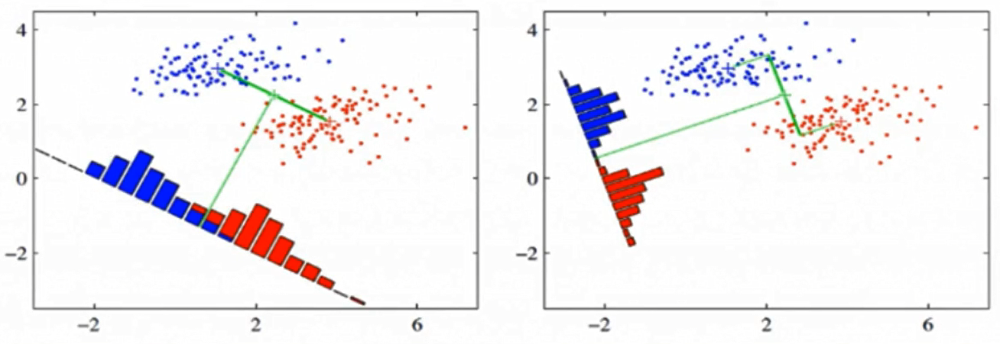

线性判别分析LDA原理
线性判别分析LDA(Linear Discriminant Analysis)又称为Fisher线性判别，是一种监督学习的降维技术，也就是说它的数据集的每个样本都是有类别输出的，这点与PCA（无监督学习）不同。LDA在模式识别领域（比如人脸识别，舰艇识别等图形图像识别领域）中有非常广泛的应用，因此我们有必要了解下它的算法原理。
1. LDA的思想
LDA的思想是： 最大化类间均值，最小化类内方差。意思就是将数据投影在低维度上，并且投影后同种类别数据的投影点尽可能的接近，不同类别数据的投影点的中心点尽可能的远。
我们先看看最简单的情况。假设我们有两类数据 分别为红色和蓝色，如下图所示，这些数据特征是二维的，我们希望将这些数据投影到一维的一条直线，让每一种类别数据的投影点尽可能的接近，而红色和蓝色数据中心之间的距离尽可能的大。

上图提供了两种投影方式，哪一种能更好的满足我们的标准呢？从直观上可以看出，右图要比左图的投影效果好，因为右图的黑色数据和蓝色数据各个较为集中，且类别之间的距离明显。左图则在边界处数据混杂。以上就是LDA的主要思想了，当然在实际应用中，我们的数据是多个类别的，我们的原始数据一般也是超过二维的，投影后的也一般不是直线，而是一个低维的超平面。
2. 瑞利商(Rayleigh quotient)与广义瑞利商(genralized Rayleigh quotient)
首先来看瑞利商的定义。瑞利商是指这样的函数$R(A,x)$:
$$
R(A, x)=\frac{x^{H} A x}{x^{H} x}
$$
其中，$x$是非零向量，而$A$为$n\times n$的Hermitan矩阵。所谓的Hermitan矩阵就是满足共轭转置矩阵和自己相等的矩阵，即$A^H=A$，例如，$A=\left(\begin{array}{cc}{1} & {2+i} \ {2-i} & {1}\end{array}\right)$的共轭转置等于其本身。当$A$为实矩阵时，如果满足$A^T=A$，则$A$为Hermitan矩阵。
瑞利商$R(A,x)$有一个非常重要的性质，即它的最大值等于矩阵$A$最大的特征值，而最小值等于矩阵$A$的最小的特征值，也就是满足
$$
\lambda_{\min } \leq \frac{x^{H} A x}{x^{H} x} \leq \lambda_{\max }
$$
当向量$x$是标准正交基，即满足$x^{H} x=1$时，瑞利商退化为$R(A, x)=x^{H} A x$。
下面看一下广义瑞利商。广义瑞利商是指这样的函数$R(A,B,x)$:
$$
R(A,B, x)=\frac{x^{H} A x}{x^{H} B x}
$$
其中x为非零向量，而$A,B$为$n\times n$的Hermitan矩阵。$B$为正定矩阵。它的最大值和最小值是什么呢？其实我们只要通过将其通过标准化就可以转化为瑞利商的格式。令$x=B^{-1 / 2} x^{\prime}$，则分母转化为：
$$
x^{H} B x=x^{\prime H}\left(B^{-1 / 2}\right)^{H} B B^{-1 / 2} x^{\prime}=x^{\prime H} B^{-1 / 2} B B^{-1 / 2} x^{\prime}=x^{\prime H} x^{\prime}
$$
而分子转化为：
$$
x^{H} A x=x^{\prime H} B^{-1 / 2} A B^{-1 / 2} x^{\prime}
$$
此时我们的$R(A,B,x)$转化为$R(A,B,x’)$:
$$
R\left(A, B, x^{\prime}\right)=\frac{x^{\prime H} B^{-1 / 2} A B^{-1 / 2} x^{\prime}}{x^{\prime H} x^{\prime}}
$$
利用前面的瑞利商的性质，我们可以很快的知道，$R(A,B,x’)$的最大值为矩阵$B^{-1 / 2} A B^{-1 / 2}$的最大特征值，或者说矩阵$B^{−1}A$的最大特征值，而最小值为矩阵$B^{−1}A$的最小特征值。
2. LDA的原理及推导过程
假设样本共有K类，每一个类的样本的个数分别为$N_1,N_2,…,N_k$
$x_1^1,x_1^2,…,x_1^{N_1}$对应第1类
$x_2^1,x_2^2,…,x_2^{N_2}$对应第2类
$x_k^1,x_k^2,…,x_k^{N_k}$对应第K类，其中每个样本$x_i^j$均为$n$维向量
设$\tilde{x}{i}^{j}$为$x_i^j$变化后的样本，则$\tilde{x}{i}^{j}=<x, u>u=\left(x^{T} u\right) u$
此处设$u$为单位向量，即$u^Tu=1$.
假设第K类样本的数据集为$D_k$，变化后的样本的均值向量为：$\tilde{\mathrm{m}}=\frac{\sum_{\tilde{x}\in D_k}\tilde{x}}{N_k}$，那么，第K类样本的方差为$\frac{S_k}{N_k}$，其中：
$$
\begin{aligned} \mathrm{S}{\mathrm{k}} &=\sum{\tilde{x} \in D_{k}}(\tilde{x}-\tilde{\mathrm{m}})^{T}(\tilde{x}-\tilde{\mathrm{m}})\
&=\sum_{x \in D_{k}}\left[\left(x^{T} u\right) u-\left(m^{T} u\right) u\right]^T\left[\left(x^{T} u\right) u -\left(m^{T} u\right) u\right] \
&=\sum_{x \in D_{k}}\left[\left(x^{T} u\right) u^{T}-\left(m^{T} u\right) u^{T}\right]\left[\left(x^{T} u\right) u -\left(m^{T} u\right) u\right] \quad (x^Tu，m^Tu为实数,转置仍是本身)\
&=\sum_{x \in D_{k}}\left[\left(x^{T} u\right)^{2} u^{T} u-2\left(x^{T} u\right)\left(m^{T} u\right) u^{T} u+\left(m^{T} u\right)^{2} u^{T} u\right] \
&=\sum_{x \in D_{k}}\left[\left(x^{T} u\right)^{2}-2\left(x^{T} u\right)\left(m^{T} u\right)+\left(m^{T} u\right)^{2}\right] \end{aligned}
$$
第K类样本的方差：
$$
\begin{aligned} \frac{S_{k}}{N_{k}} &=\frac{\sum_{x \in D_{k}}\left(x^{T} u\right)^{2}}{N_{k}}-2 \frac{\sum_{x \in D_{k}} x^{T}\left(u m^{T} u\right)}{N_{k}}+\frac{\sum_{x=D_{k}}\left(m^{T} u\right)^{2}}{N_{k}} \
&=\frac{\sum_{x\in D_k} u^{T} x x^{T} u}{N_{k}}-2 \frac{\sum_{x\in D_k} x^{T}}{N_{k}} u m^{T} u+\left(m^{T} u\right)^{2} \
&=u^{T} \frac{\sum_{x\in D_k} x x^{T}}{N_{k}} u-\left(m^{T} u\right)^{2} \quad (注：\frac{\sum_{x \in D_k}x^T}{N_k}=m^T)\
&=u^{T} \frac{\sum_{x\in D_k} x x^{T}}{N_{k}} u-u^{T} m m^{T} u \
&=u^{T}\left(\frac{\sum_{x\in D_k} x x^{T}}{N_{k}}-m m^{T}\right) u \end{aligned}
$$
各个类别的样本方差之和：
$$
\begin{aligned} \sum_{k}\frac{S_k}{N_k} &=\sum_{k=1}^{K}u^{T}\left(\frac{\sum_{x \in D_k} x x^{T}}{N_{k}}-m_k m_k^{T}\right) u \ &=u^T\sum_{k=1}^{K}(\frac{\sum_{x \in D_k}xx^T}{N_k}-m_km_k^T)u\&=u^TS_wu
\end{aligned}
$$
其中，$S_w=\sum_{k=1}^{K}(\frac{\sum_{x \in D_k}xx^T}{N_k}-m_km_k^T)$，$S_w$一般被称为类内散度矩阵
不同类别$i,j$之间的中心距离：
$$
\begin{aligned} S_{i j} &=\left(\tilde{m}{i}-\tilde{m}{j}\right)^{T}\left(\tilde{m}{i}-\tilde{m}{j}\right) \
&=[(u^Tm_i)u-(u^Tm_j)u]^T[(m_i^Tu)u-(m_j^Tu)u] \
&=[(u^Tm_i)u^T-(u^Tm_j)u^T][u(m_i^Tu)-u(m_j^Tu)] \
&=u^T(m_i-m_j)u^Tu(m_i^T-m_j^T)u \
&=u^{T}\left(m_{i}-m_{j}\right)\left(m_{i}-m_{j}\right)^{T} u \end{aligned}
$$
所有类别之间的距离之和为：
$$
\begin{aligned}
\sum_{i, j \atop i \neq j} s_{i j} &= u^T\sum_{i, j \atop i \neq j}[(m_i-m_j)(m_i-m_j)^T]u \
&=u^TS_bu
\end{aligned}
$$
其中，$S_b=\sum_{i, j \atop i \neq j}[(m_i-m_j)(m_i-m_j)^T]$，$S_b$一般被称为类间散度矩阵。
在已知条件下，$S_w,S_b$均可求出，LDA算法的目标是“类间距离尽可能大，类内方差尽可能小”，即最大化$u^TS_bu$,最小化$u^TS_wu$.
令$J(u)=\frac{u^{T} S_{b} u}{u^{T} S_{w} u}$,则目标函数为：
$$
\max J(u)
$$
为了使所求最大，可假设$u^TS_wu=1$，则问题转化为：
$$
\begin{array}{l}{\max u^{T} S_{b} u} \
s.t. \quad u^TS_wu=1
\end{array}
$$
$$
\begin{aligned}
L(u, \lambda)&=u^{T} S_{b} u+\lambda\left(1-u^{T} S_{w} u\right) \
\frac{\partial L}{\partial u} &= S_bu+S_b^Tu-\lambda S_wu-\lambda S_w^Tu \ &=2(S_bu-\lambda S_wu)\quad (因为S_b，S_w为对称矩阵)\ &=0 \Rightarrow S_{b} u=\lambda S_{w} u \end{aligned}
$$
证明$S_b$为对称矩阵：
$$
\begin{aligned}
S_b^T &= (\sum_{i, j \atop i \neq j}[(m_i-m_j)(m_i-m_j)^T])^T\
&=\sum_{i, j \atop i \neq j}[(m_i-m_j)(m_i-m_j)^T]^T \
&=\sum_{i, j \atop i \neq j}[(m_i-m_j)(m_i-m_j)^T] \
&=S_b
\end{aligned}
$$
所以，$S_b$为对称矩阵，同理可证明$S_w$为对称矩阵。
$$
\begin{array}{l}
S_{w}^{-1}{S_{b} u=\lambda u}
\end{array}
$$
计算矩阵$S_w^{-1}S_b$的最大的$d$个特征值和对应的$d$个特征向量$(w_1,w_2,…,w_d)$，得到投影矩阵$W$。注意，选取特征值时，如果一些特征值明显大于其他的特征值，则取这些取值较大的特征值，因为它们包含更多的数据分布的信息。相反，如果一些特征值接近于0，我们将这些特征值舍去。
3. LDA算法流程
输入：数据集$D={(x_1,y_1),(x_2,y_2),…,(x_m,y_m)}$,其中，任意样本$x_i$为$n$维向量，$y_i\in {C_1,C_2,…,C_k}$,降维到的维度为$d$.
输出：降维后的数据集$D’$.
- 计算类内散度矩阵$S_w$
- 计算类间散度矩阵$S_b$
- 计算矩阵$S_w^{-1}S_b$
- 计算矩阵$S_w^{-1}S_b$的特征值与特征向量，按从小到大的顺序选取前$d$个特征值和对应的$d$个特征向量$(w_1,w_2,…,w_d)$，得到投影矩阵$W$.
- 对样本集中的每一个样本特征$x_i$，转化为新的样本$z_i=W^Tx_i$
- 得到输出样本集$D’={(z_1,y_1),(z_2,y_2),…,(z_m,y_m)}$